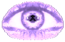

CTD/SBC'2002 stuff
This is the material that supported my
M.Sc. Dissertation in the PhD Thesis
and MSc Dissertations Context (CTD), organized by the
Brazilian Computer
Science Society (SBC).
Since 1987, this annual event is awarding the best computer science post-graduate works finished
in the previous year in Brazilian universities.
The selection has three phases. In the first one, they evaluate a
short paper (5 pages) that summarizes the
thesis; in the second, they evaluate the selected thesis
themselves and a short
description of the contributions of the thesis; and in the
last phase they consider an oral presentation that is held
during the Conference on Computer
Science.
In July 2002, this context held in Florianopolis (in the south
coast of Brazil). There were 75 masters thesis submitted from
several universities and
my work was awarded the FIRST place (best masters
dissertation).
I am also very glad to say that my friend Rogério Feris got the second place
and we were both suppervised by Prof. Roberto Cesar at DCC - IME - USP.
Back to Teófilo's home page.